AAAARG.ORG
| Date: | 2004-2024 |
| Index: | quasi-institution study |
AAAARG.ORG was an online repository of scans, exports, essays, excerpts, books, and other marginalia. It was an online platform supporting offline autodidactic activities. AAAARG.ORG grew into a community of researchers and enthusiasts from contemporary art, critical theory, philosophy, and related fields who maintain, catalog, annotate and run discussions relevant to their research interests. Its self-description:
AAAARG.ORG is a conversation platform - at different times it performs as a school, or a reading group, or a journal. It was created with the intention of developing critical discourse outside of an institutional framework. But rather than thinking of it like a new building, imagine scaffolding that attaches onto existing buildings and creates new architectures between them.
History
To be written.
Features
An online library and shared bookshelf of texts, organized into collections (previously called "issues")...
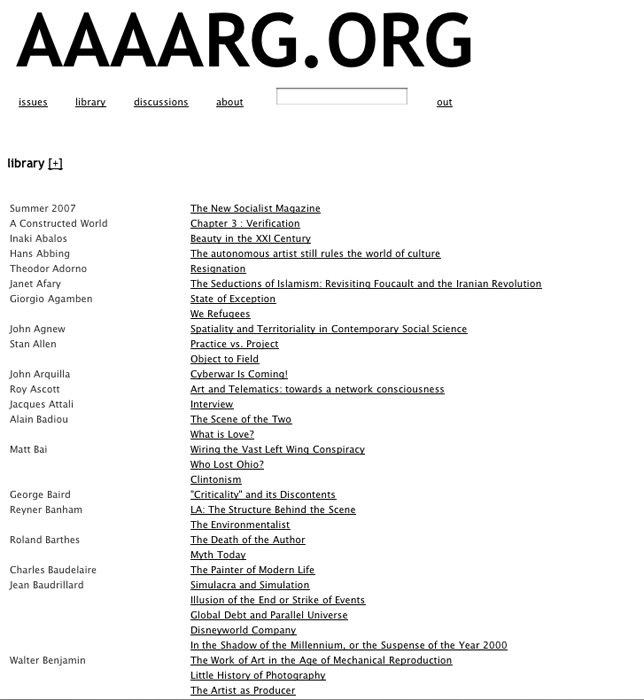
Robert Ochshorn and I implemented this reading interface through which you could search, highlight, add annotations, and excerpt into a commonplace book. Multiple people could remotely "read together" occupying the space of a page in real time while chatting and doing all of the above.
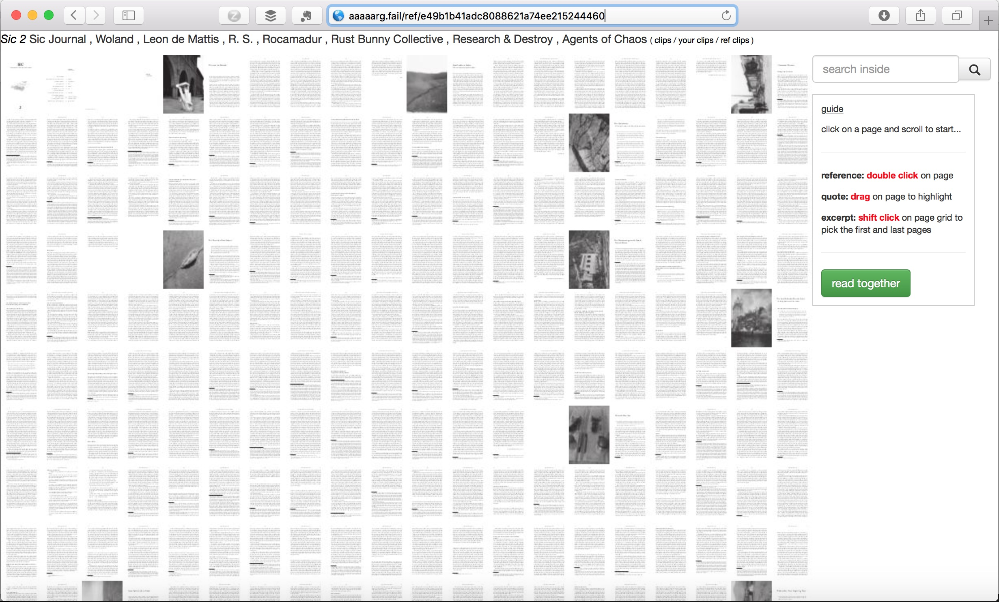
Searching for "struggle" within the book. Densities of the term's appearance in the book are clear from the highlighting.
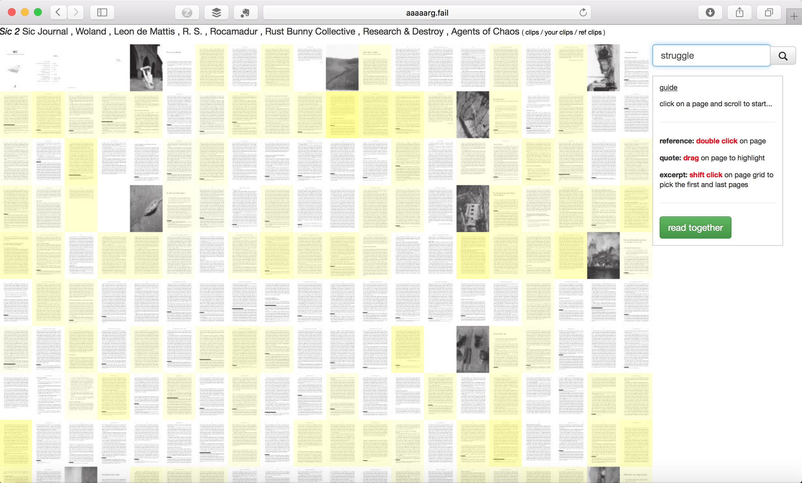
Multiple search terms at the same time: "vote" and "strike", intersections are apparent from the highlights.
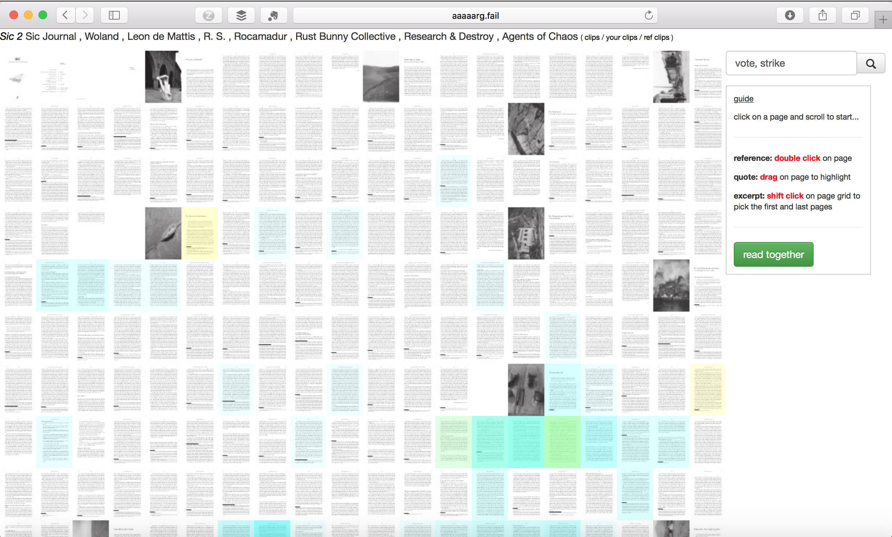
The reading interface is a window scanning the surface of the pages ("vote" and "strike" both appear on this page): 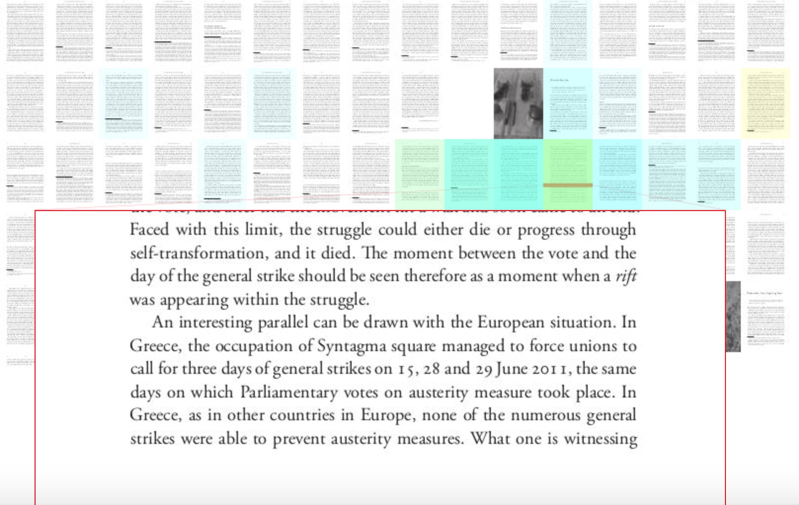
The window into the book, where a translator's note has been highlighted:
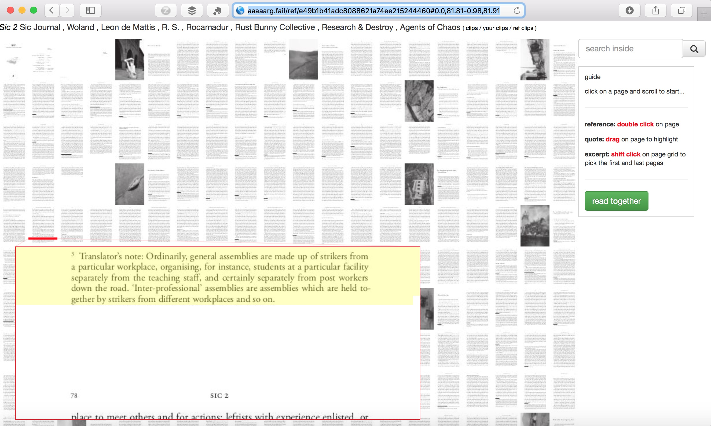
Here this translator's note has been "clipped" and a note and some tags can be added as well. The clip can just be shared as an image, it can be shared as a link to the precise location in the book, and it can also be added into the reader's commonplace book.
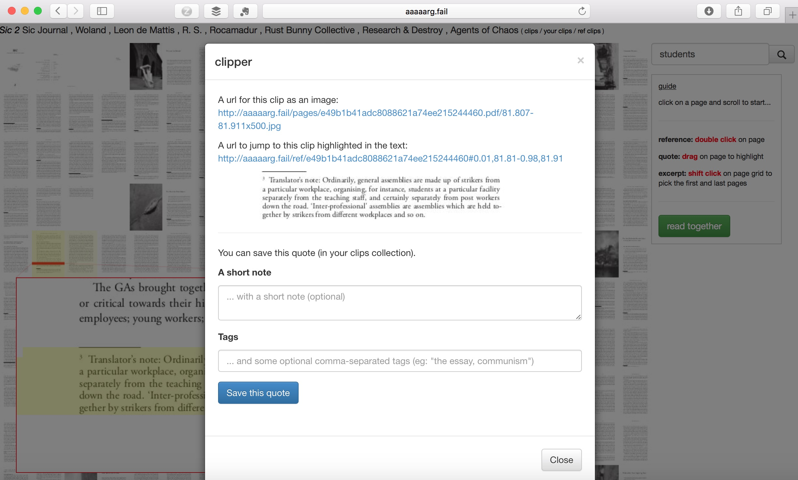
A second reading interface allowed for linking to a text from within the page of another text. Here the grid of pages is more vertical to provide space for other texts to be added onto the right.
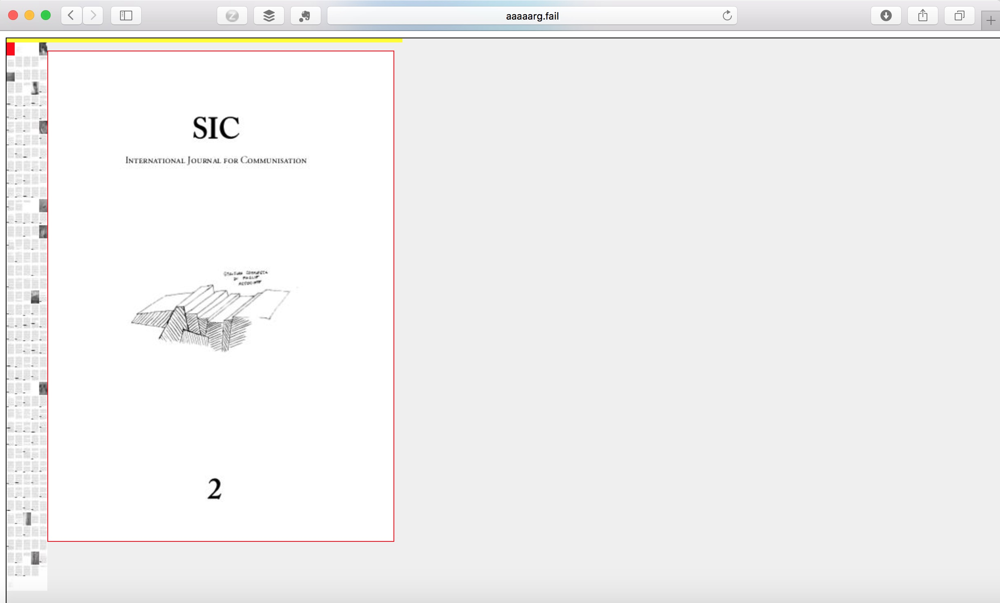
The colorful marks are links that readers have embedded into the page of this article.
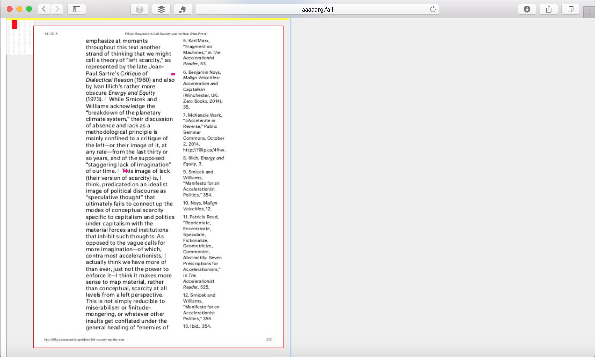
Clicking one links directly to the location of the relevant passage in another text. This chain of references can continue on.
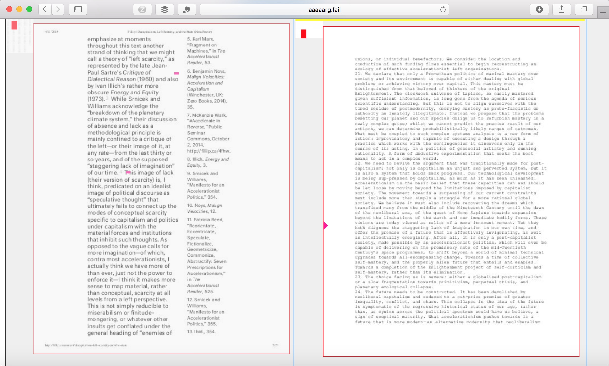
The global search also gave results as pages
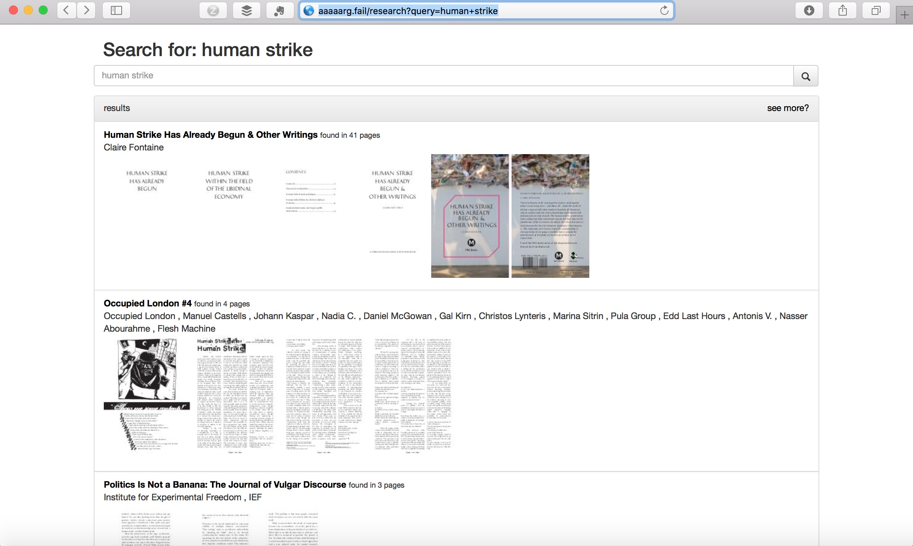
And clicking on a page would bring you directly into that same page.
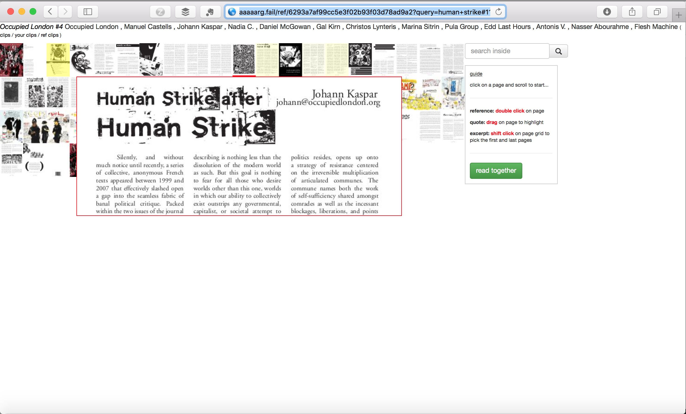
Texts
- Sean Dockray, Lawrence Liang, "Sharing Instinct: An Annotation of the Social Contract Through Shadow Libraries", e-flux journal 56th Venice Biennale, 14 Aug 2015. (English)
- Sean Dockray, "Openings and Closings", in Contestations: Learning From Critical Experiments in Education, eds. Tim Ivison and Tom Vandeputte, Bedford Press, 2013. Commentary by Jacqueline Bell.
- Sean Dockray. “Interface, Access, Loss.” In Undoing Property?, edited by Marysia Lewandowska and Laurel Ptak. Berlin : Spanga, Sweden: Sternberg Press ; Tensta Konsthall, 2013.
- Jodi Dean, Sean Dockray, Alessandro Ludovico, Pauline van Mourik, Broekman, Nicholas Thoburn and Dmitry Vilensky, "Materialities of Independent Publishing: A Conversation with AAAAARG, Chto Delat?, I Cite, Mute, and Neural", New Formations 78 (Aug 2013), pp 157-178.
- Caleb Waldorf, Jason Smith, Matteo Pasquinelli, Sean Dockray, There is nothing less passive than the act of fleeing, 2010
- Sean Dockray, "The Scan and the Export", Fillip, 2010
- Sean Dockray, Book Piracy and Alienated Labour and re: Can you give us a little more insight?, -empyre- mailing list, 2010
- Sean Dockray, Social Studies, conversation with Hugo Hopping, X-TRA, 2008
Interviews
- Cornelia Sollfrank, Felix Stalder, "The Practice of Sharing Knowledge, Interview with Sean Dockray", Mar 2019, 28 min. Video. Conducted Oct 2017 at HEK, Zurich. Part of the Creating Commons project. (English)
- Cornelia Sollfrank, "Expanded Appropriation", video interview with Sean Dockray including transcription and introduction, part of Giving What You Don't Have 2013.
- "Partials That Can Circulate. Sean Dockray, Founder of Aaarg.org Interviewed by Charles Stankievitch", in Ex Libris: Commonplace Books, Berlin: K. Verlag, 2013, pp 1-2. Conducted via email in Jul/Aug 2013.
- Federico Campagna, "Interview with AAAAARG.org", in We Have Our Own Concept of Time and Motion, eds. Auto Italia, 2011, pp 17-18
- Matthew Fuller, "In the Paradise of Too Many Books: An Interview with Sean Dockray", Mute, London, 4 May 2011.
- Randall Szott, "Sean Dockray Interview", 127 Prince, 4 Oct 2010.
- Morgan Currie, "Small is Beautiful: a discussion with AAAARG architect Sean Dockray", Masters of Media blog, University of Amsterdam, 5 Jan 2010.
- Julian Myers, "Four Dialogues 2: On AAAARG", Open Space blog, San Francisco: SFMOMA, 26 Aug 2009.
Presentations
- Acceleration, Legislation And Knowledge-sharing, curated by Emile Zile, ACMI X, 2016
- "Week 1: The Public School and AAAARG.org", Plausible Artworlds, 2010
Press
- Henry Warwick, The Slow Cancellation of Online Libraries, 2024
- Louise O'Hare, "London-Havana Diary: Art Publishing, Sustainability, Free Speech and Free Papers", in Whose Book Is it Anyway? A View from Elsewhere on Publishing, Copyright and Creativity, pp. 33-64, 2016
- Rochelle Pinto, "Pirates in our public library: Why Indian scholars are closely watching a court case in Quebec", 2016
- Charles Stankievech, "Letter to the Superior Court of Quebec Regarding Arg.org", in Fantasies of the Library, eds. Anna-Sophie Springer and Etienne Turpin, MIT Press, 2016, pp 98-110. (English)
- Danny Butt, Scott McQuire, Nikos Papastergiadis, "Platforms and Public Participation", Continuum, 2016, pp 1-10. (English)
- Jonathan Basile, "Who"s Afraid of AAARG?", Guernica, 25 Aug 2016. (English)
- Kate Taylor, "Sharing copyright material online not a simple case of David versus Goliath", The Globe and Mail, 2016
- The Battle for Open-Access Information
- Pelle Snickars, "Publikationshack", in Universitetet som medium, eds. Matts Lindström and Adam Wickberg Månsson, Stockholm: Mediehistoriskt arkiv, 2015, pp 9-46. (Swedish)
- Kevin von Duuglas-Ittu, "The AAAARG.org Discussion of the Macmillan Threat", Mitochondrial Vertigo blog, Apr 2010.
- Marcus Boon, "Uploading My Book to AAAAARG.ORG", In Praise of Copying blog, 15 Oct 2010.
- Danny Birchall, The week in cultural heritage online, Feb 2010
- Janneke Adema, "Scanners, collectors and aggregators. On the ‘underground movement’ of (pirated) theory text sharing", Open Reflections blog, Sep 2009.
Misc
- xxxx Six Failures
- AAAARG Library
- Jeff Khonsary, "Browsing the AAAARG Library", Fillip 13 (Spring 2011).